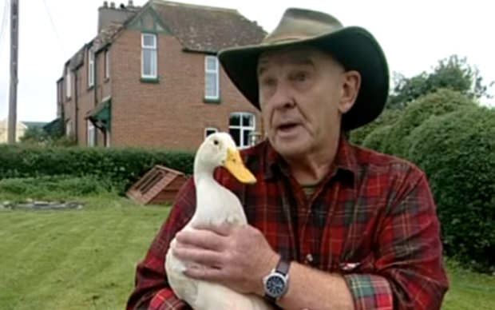
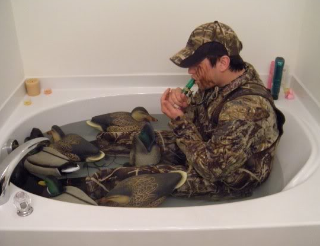
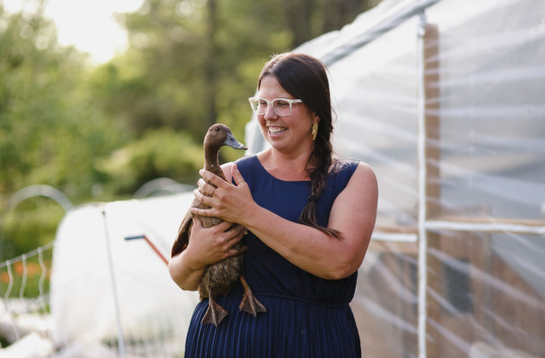
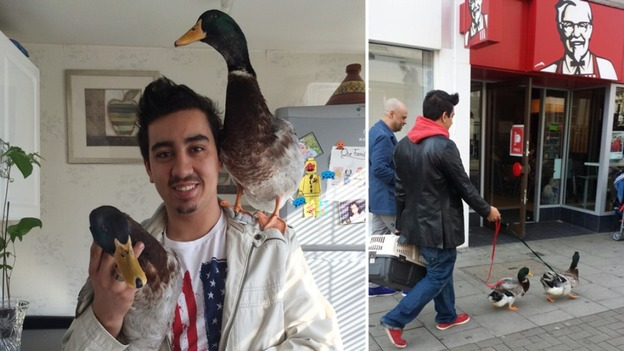
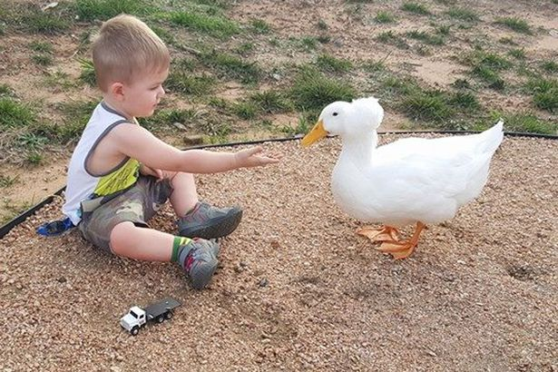
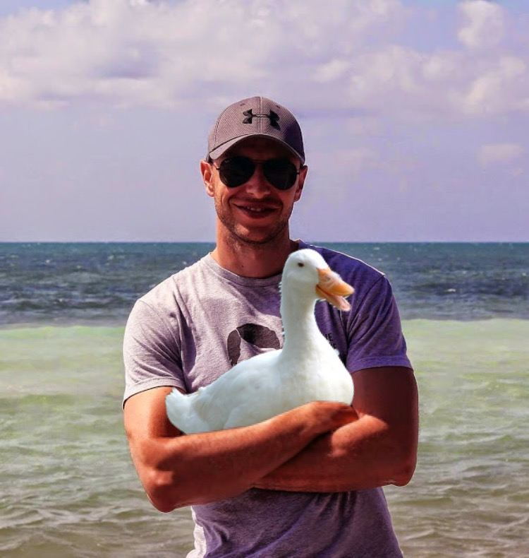

Ducks Make Great Pets
Just ask these proud owners
We Love Our Ducks!
Marie, Age 25, with her duck Mr. Quackers
"Ducks are honestly so wonderful. I've had Mr. Quackers for 3 years now, and I can honestly say that getting him was the best decision of my life. He's such a a lovely little guy and manages to make me smile every day."
Terry, Age 62, with his duck Constance
"Well, Constance definitely isn't the young chick she once was. She can be a bit touchy sometimes, but despite the occasionaly peck, I know she loves me. We've got one of those bonds - you know? I rescued her from a storm when she was young, and she's been with me ever since. I wouldn't have it any other way."
Jake, Age 29, with his Flock
"They - all of them - are just such a calming presence. They know when I'm getting stressed and will just pile on me for reassurance. I love them for that. They really care. Ducks are like that. Once you get a duck, you know there's no going back, because no other pet could ever live up to the expectations that a duck sets."
Ali, Age 27, with her duck George
"I cannot emphasize how much a I recommend getting a duck. They're the pet that anyone - and I mean anyone - could and would love. They're not too high maintenance, and they're basically just a cool pal that hangs around the house. I mean George is basically my best bro. Ducks are the best."
Jared, Age 25, with his ducks Simon and Garf
"Ducks are great pets because they are always kinda just... there. Like, I got Simon and Garf when I was going through a quarter life crisis of sorts, and their presence just soothed me. They were my rocks in time when I really needed them."
Ty, Age 4, with his duck Chainsaw
"I love ducks because they are really cute. Chainsaw is really nice and cool. Ducks are great."
Hercules, Ageless?, with his duck Duckules
"Being an ageless god myself, it was important to me that I have a pet just as awesome. So naturally, I gravitated toward the duck. The duck is a very powerful creature, perfect to be the companion of a god. When I saw Duckules, I just knew that he was the one meant to be my pet. His eyes held a timeless wisdom, and he radiated an awe-inspiring confidence. Now, 3,000 years later, I can be confident that he was the right choice."